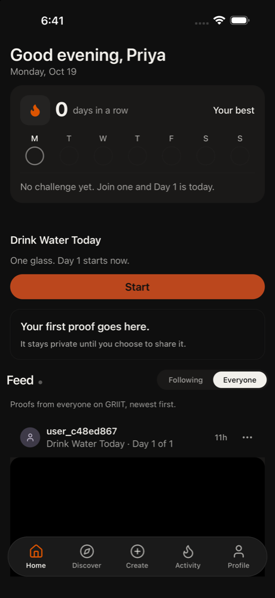

1. home tap Profile
Home shows 0 days in a row and 'Day 1 starts now', even though I've supposedly used this for a month. I'll open my profile to see my posts and compare the numbers.
Confusion: Home says 0 days in a row and no challenge yet, which doesn't look like a month of use.
neutral · 7023ms